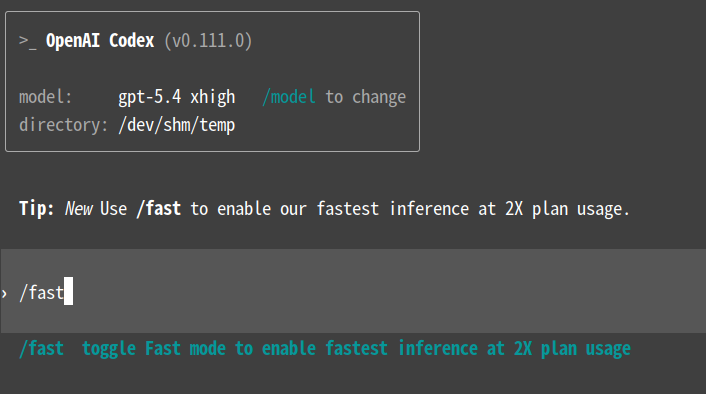

Wilf Lin
@Wilf_Lin
@laogui 超过640k就严重失真了，别开太高

老鬼
@laogui
咱还是说点 GPT-5.4 与编程相关的能力吧，Codex 里的 fast 模式和 100 万 token 上下文还是挺有吸引力的。
GPT-5.4 融合了 GPT-5.3-Codex 的编码能力，SWE-Bench Pro 得分 57.7%，稍高于 GPT-5.3-Codex 的 56.8%，在推理过程中延迟更低。
在 Codex 中启用 /fast 模式后，GPT-5.4 速度最高可提升 1.5 https://t.co/HI8hmYNdR0